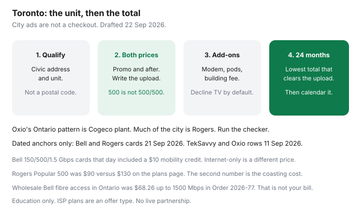

Internet · Toronto
Cheap Home Internet in Toronto: Address-First Shopping (Rogers, Bell, TekSavvy, Oxio)
Toronto internet ads are written for a city. Your bill is written for a suite. A North York house on Bell Pure Fibre, a downtown condo on Beanfield, and a Scarborough street that still finishes on Rogers coax will not see the same checkout page. Cheap, in this guide, means the lowest 24-month total for a tier your household can actually use, after the promo, after the modem, and after any building fee you cannot decline. It does not mean the lowest number in a national banner.
Disclosure: Home internet plans from facilities-based and wholesale providers are offer types. Saving Optimizer does not claim a live partnership with Rogers, Bell, TekSavvy, Oxio, or any other ISP. Prices below are dated public cards and comparison rows, not a quote for your unit.
Key takeaways
- Qualify the civic address and unit. Rogers cable and Bell fibre sit on different streets, sometimes different floors of the same project. Postal-code winners are fiction.
- Dated Ontario anchors, not your cart: Bell Internet and Mobility cards on 21 Sep 2026 at $65 (150/150), $80 (500/500), and $85 (1.5 Gbps / 940 up), each including a $10 mobility credit. Rogers plans-page cards the same day: Starter 150 at $75 versus $110, Popular 500 at $90 versus $130, Premier 2 Gig at $100 versus $160.
- TekSavvy’s Ontario Cable 100 comparison row on 11 Sep 2026 was $38.95 then $74.95. Oxio’s Ontario 100/100 row that day was $52 flat, on Cogeco plant. Much of the City of Toronto is Rogers plant, so Oxio often will not qualify. Run the tool.
- A winback only beats an independent if the email states the rate, the months, the upload, the gateway, and any early cancellation fee. A verbal “we can do better” is not a number.
- Same-day worksheet: three quotes, 24-month totals, equipment lines, building fee if any. Order from the sheet, not from the ad.
Why Toronto pricing is address-specific
The old City of Toronto, Etobicoke, North York, Scarborough, East York, and York are one municipality and several networks. Rogers is the cable incumbent on most of those streets. Bell’s Pure Fibre pass is wide and still not universal, especially in older high-rises where the riser was never rebuilt. Some towers have a third network, often Beanfield or another building fibre, that a Rogers ad will not mention. Wholesale retailers appear only where they have access and a working install path.
The GTA outside that map changes again. Cogeco’s Ontario cable footprint includes cities such as Hamilton, Burlington, Oakville, Niagara, Kingston, and Peterborough, not the Rogers grid that covers most Toronto homes. That split is why an “Ontario” Oxio price can be real in one regional municipality and absent in a Queen Street condo. TekSavvy sells on more than one plant, cable and fibre, and the cart still depends on the unit. Telecom Order CRTC 2026-77 (24 April 2026) finalized wholesale fibre rates, including Bell’s Ontario and Québec access rate of $68.26 a month up to 1500 Mbps before capacity charges. That wholesale input is why an independent fibre offer in Toronto is often close to Bell’s own promo, not a mystery $40 gigabit. Cable wholesale can still undercut. The address tool is the only honest sorter.
Promos are also address-coded. A winback offered to a ten-year Rogers account in Etobicoke is not the tile on a moving-day page for a new condo. Write the offer you were actually shown.
Compare Rogers, Bell, TekSavvy, Oxio, and peers on after-promo math
Use one tier that clears the worksheet, then price 24 months. Do not compare Bell’s 500/500 fibre upload with a cable 500 that uploads a fraction of that and call them the same product. The label guide is the referee.
| Anchor | Shape | Price pattern | 24-month caution |
|---|---|---|---|
| Bell 150 / 500 / 1.5 Gbps | Pure Fibre uploads matched or, on 1.5 Gbps, 940 up, when it is actually Pure Fibre | $65 / $80 / $85 with the mobility credit on that page | Internet-only is a different card. The page said the shown rates already include $10 off for ordering mobility too. Dropping mobility can drop the credit. |
| Rogers 150 / 500 / 2 Gig | Often cable. Upload is whatever the quote prints. Fibre exists on some streets. | $75 then a $110 regular on Starter 150; $90 then $130 on Popular 500; $100 then $160 on Premier 2 Gig | If you coast after the offer, the second price is the one that matters. A $25/month Wi-Fi 7 modem upgrade was on the Rogers internet page the same day. Ask if it is in the total. |
| TekSavvy Ontario Cable 100 | Wholesale cable where the unit qualifies. Fibre tiers exist on other rows. | $38.95 then $74.95 on the 11 Sep 2026 comparison | About $1,366.80 over 24 months if you never re-shop. Year one is the cheap part. Phone support is part of why people pick it. Details in is TekSavvy worth it. |
| Oxio Ontario 100 | 100/100 on that row, flat, no term. Cogeco plant in Ontario, not the Rogers grid. | $52, or $1,248 over 24 months, on that table | If the Toronto unit is on Rogers coax, this row may not be offered. Do not average it into a downtown price. |
Peers worth a lookup when the tool or the building list names them: Beanfield in served downtown buildings, Start.ca, Distributel, Carrytel, and CIK Telecom in some condos. They are not a second set of national prices. If the name appears for your unit, add a column. If it does not, skip the Reddit thread that swore it was available in “Toronto.”
A worked caution, labelled as Ontario cards, not your suite. Rogers Popular 500 at $90 for 24 months is $2,160 before tax if the offer really lasts the whole term. The same tier at the $130 without-savings figure is $3,120. Bell’s $80 500/500 card is $1,920 over 24 months and includes a mobility credit you might not want. TekSavvy Cable 100 at $38.95 for 12 months and $74.95 for the next 12 is about $1,366.80, on a smaller upload than Bell’s 500/500. The cheap independent wins on dollars and can lose on the video call. Pick the column your worksheet allows, then the dollars.
Condo wiring and landlord constraints in the GTA
Houses in Toronto are mostly a two-plant problem: Rogers coax and whatever Bell has built. Condos add a third: the bulk deal. Internet inside the rent or the common-element fee can be mandatory even after you order your own provider. The CRTC says the building cannot limit you to one ISP. It also says the bundled charge may remain. Read apartment and condo rights before you assume a personal Rogers order cancels a $60 technology fee.
Ask the concierge or the status certificate package which carriers already have equipment in the main room. A Beanfield jack in the suite is a quote you should take, then compare with Bell and Rogers on upload and on the 24-month total. A building that only has coax can still take TekSavvy or another cable wholesaler if the address qualifies. It cannot conjure Pure Fibre because a neighbour in a newer tower has it.
Landlord-included internet in a basement apartment or a house share is the same trap at a smaller scale. Get the opt-out answer before you sign. Our housing guides cover heat and hydro in leases; this page only covers the internet line inside that negotiation.
Winback versus independent when both are available
If you already have Rogers or Bell, a retention offer can beat a new independent for the next year and lose in month 13. Treat winback as one column on the sheet.
- Get the independent or the other incumbent in writing first, with upload and the after-promo price. That is your alternative. The Rogers script and the Bell Fibe playbook are the call mechanics.
- Ask retention to beat a number you would actually accept. “Match my flyer” is weaker than “$52 flat for 100/100 is my alternative if this unit qualifies; otherwise TekSavvy’s after-credit total is the alternative.”
- The email you keep states monthly rate, how many months, what happens after, upload, gateway rental or waiver, install, and any early cancellation fee. CRTC 2026-43, in force 12 June 2026, restricted many activation fees. It did not ban a disclosed home-internet term fee. See the ETF guide.
- If retention will not write it down, take the independent when the address qualifies and the upload works. A chat transcript that says “around sixty dollars” is how people end up at the regular rate.
New customers do not have a winback. They have the public card and whatever the address tool shows today. Do not wait for a loyalty department you have never paid.
Avoid modem rental and bogus add-ons
The monthly you compare has to include the box. Rogers’ internet page on 21 Sep 2026 offered a $25 a month step up to a newer Wi-Fi 7 modem and extenders. That can be the right spend when the gateway is the bottleneck, and it is a silent loss when you add it because the rep suggested it. Bell’s Ontario page that day included a Giga Hub on the fibre package; extra pods are still optional. TekSavvy often loans hardware or allows an approved cable modem. Oxio includes a router and, on the Ground Rules page reviewed 21 Sep 2026, still lists separate items such as a $30 account processing fee. “No setup fee” on a homepage is not every line in the fee table.
Decline, unless you have a written reason: cable TV you will not watch, a home-phone line to satisfy a bundle sticker, device insurance, and a second Wi-Fi pod before you have moved the first gateway out of the cabinet. Bundle math is its own guide: internet, TV, and phone. Hardware payback is buy versus rent. Neither belongs as a surprise on the internet total.

A same-day shopping worksheet
Block an hour. Use the unit number. Save PDFs or screenshots with the date in the filename.
| Line | Rogers quote | Bell quote | Independent that qualifies |
|---|---|---|---|
| Technology and down / up | |||
| Price now, and for how many months | |||
| Price after that | |||
| Modem, pods, install, account fees | |||
| Term and early cancellation fee | |||
| Building internet fee you still pay | |||
| 24-month total before tax |
Order the row with the lowest total among rows that clear your upload. If two rows are within a few dollars, take the higher upload and the one that is month-to-month or has a shrinking cancellation fee. Calendar the month the credit ends the day you submit the order. The three-quote method is the longer version of this sheet. If you are comparing a Vancouver cousin’s Telus bill with these Ontario cards, stop. That shop is a different plant.
Sources & date stamps
- Bell.ca Ontario Internet and Mobility cards — $65 / $80 / $85 with a $10 mobility credit, uploads as described. Fetched 21 Sep 2026 for our Rogers versus Bell guide. Reused here on 22 Sep 2026 as a dated anchor, not a live cart.
- Rogers plans-page tiers — $75/$110, $90/$130, $100/$160, recorded 21 Sep 2026. Rogers.com/internet the same day: $25 Wi-Fi 7 modem-upgrade line.
- Topicks.ca, 11 Sep 2026 — TekSavvy Ontario Cable 100 at $38.95 then $74.95; Oxio Ontario 100/100 at $52. Table belongs to addresses that qualify. Oxio’s Ontario plant in our Oxio guide is Cogeco, not Rogers.
- Telecom Order CRTC 2026-77 (24 April 2026) — Bell Canada aggregated FTTP access, Ontario and Québec, $68.26 (3–1500 Mbps) before capacity. Wholesale input, not a retail Toronto price.
- Oxio Ground Rules — $30 account processing fee and other lines, reviewed 21 Sep 2026 in our Oxio guide.
- CRTC apartment and condo access page, read 22 Sep 2026 — bundled fees may remain. See the rights guide for the decisions.
Frequently asked questions
Why can’t I trust a “best internet in Toronto” list?
The list does not know your unit. Rogers, Bell, a building fibre network, and a wholesaler qualify different addresses. A price that is real on Cogeco plant in the wider region can be unavailable on Rogers plant in the city. Qualify the suite, then compare 24-month totals.
Is Oxio available in Toronto?
Only where Oxio’s checker says so. In Ontario, Oxio’s published wholesale pattern is Cogeco plant. Much of the City of Toronto is Rogers cable. Run the unit. Do not budget the $52 Ontario 100/100 row from the 11 Sep 2026 comparison until the cart shows it.
Is Bell always better than Rogers in Toronto?
No. Pure Fibre uploads are the reason Bell wins some streets, on the 21 Sep 2026 Ontario cards. If your unit is copper Fibe, or fibre is not offered, Rogers or a cable wholesaler can be the better 24-month buy. Compare upload and the price after the promo.
Should I call retention before I switch?
If you are already a Rogers or Bell customer, yes, after you have a competing quote. Keep the offer in writing, including the month the credit ends and any cancellation fee. If you are new, shop the public cards and the independents that qualify. There is no loyalty discount to wait for.
What fees should I refuse by default?
A modem upgrade you have not tested a need for, extra Wi-Fi pods, TV, a home-phone line, and device insurance. Add a fee back only when the worksheet says the radio or the bundle is the actual problem. Activation fees without a technician were restricted by CRTC 2026-43 from 12 June 2026. A disclosed term fee can still exist.